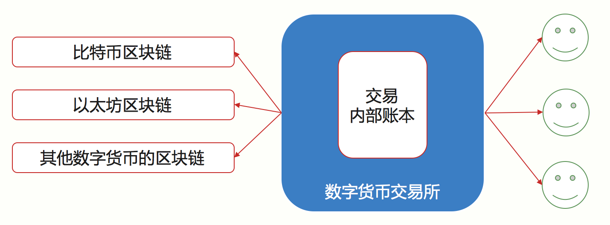
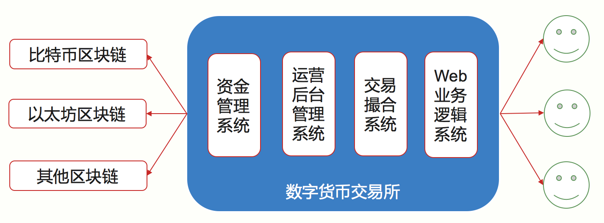
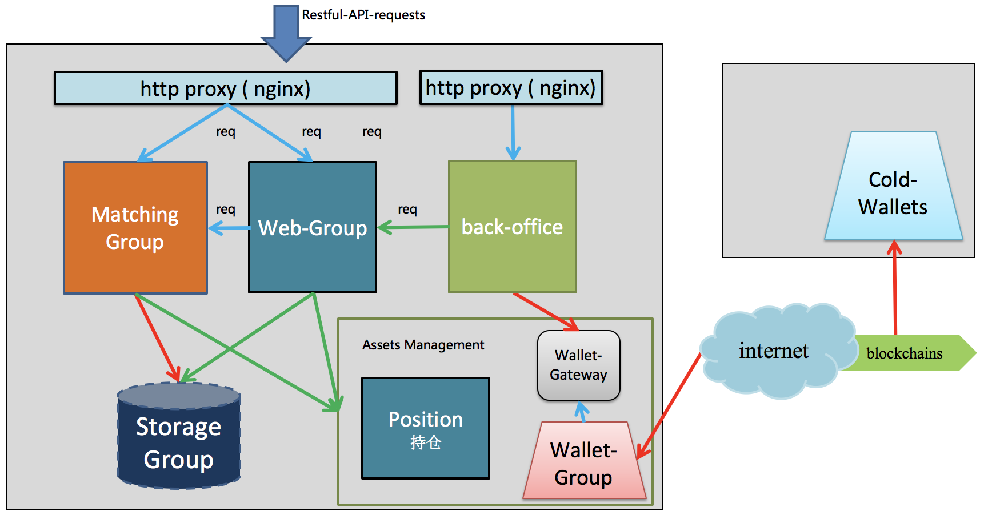
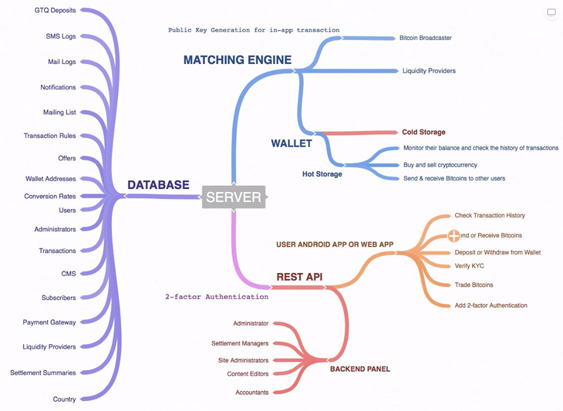
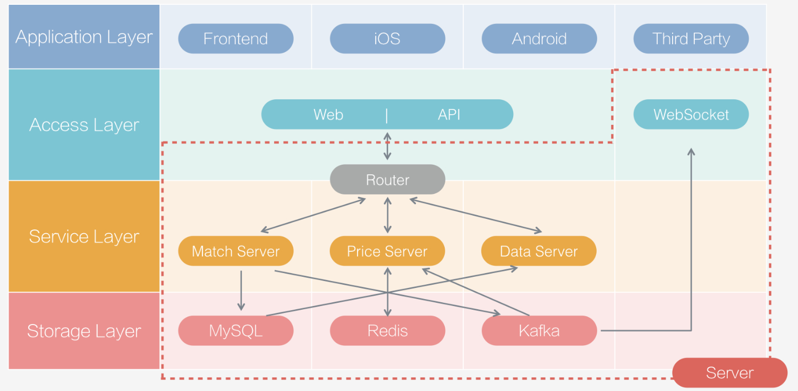

- 00 开篇词 帮你从0到1深入学习区块链技术.md.html
- 尾声篇 授人以鱼，不如授人以渔.md.html
- 新书首发《区块链第一课：深入浅出技术与应用》.md.html
- 第01讲 到底什么才是区块链？.md.html
- 第02讲 区块链到底是怎么运行的？.md.html
- 第03讲 浅说区块链共识机制.md.html
- 第04讲 区块链的应用类型.md.html
- 第05讲 如何理解数字货币？它与区块链又是什么样的关系？.md.html
- 第06讲 理解区块链之前，先上手体验一把数字货币.md.html
- 第07讲 区块链的常见误区.md.html
- 第08讲 最主流区块链项目有哪些？.md.html
- 第09讲 深入区块链技术（一）：技术基础.md.html
- 第10讲 深入区块链技术（二）：P2P网络.md.html
- 第11讲 深入区块链技术（三）：共识算法与分布式一致性算法.md.html
- 第12讲 深入区块链技术（四）：PoW共识.md.html
- 第13讲 深入区块链技术（五）：PoS共识机制.md.html
- 第14讲 深入区块链技术（六）：DPoS共识机制.md.html
- 第15讲 深入区块链技术（七）：哈希与加密算法.md.html
- 第16讲 深入区块链技术（八）： UTXO与普通账户模型.md.html
- 第17讲 去中心化与区块链交易性能.md.html
- 第18讲 智能合约与以太坊.md.html
- 第19讲 上手搭建一条自己的智能合约.md.html
- 第20讲 区块链项目详解：比特股BTS.md.html
- 第21讲 引人瞩目的区块链项目：EOS、IOTA、Cardano.md.html
- 第22讲 国内区块链项目技术一览.md.html
- 第23讲 联盟链和它的困境.md.html
- 第24讲 比特币专题（一）历史与货币.md.html
- 第25讲 比特币专题（二）：扩容之争、IFO与链上治理.md.html
- 第26讲 数字货币和数字资产.md.html
- 第27讲 弄懂数字货币交易平台（一）.md.html
- 第28讲 弄懂数字货币交易平台（二）.md.html
- 第29讲 互联网身份与区块链数字身份.md.html
- 第30讲 区块链即服务BaaS.md.html
- 第31讲 数字货币钱包服务.md.html
- 第32讲 区块链与供应链（一）.md.html
- 第33讲 区块链与供应链（二）.md.html
- 第34讲 从业区块链需要了解什么？.md.html
- 第35讲 搭建你的迷你区块链（设计篇 ）.md.html
- 第36讲 搭建你的迷你区块链（实践篇）.md.html
- 捐赠
第28讲 弄懂数字货币交易平台（二）
在上一篇文章中，我们介绍了数字货币交易平台的概念，那么今天我们就来重点聊聊数字货币交易平台的技术。如果你有过设计或实现传统金融交易系统的经验，那么你阅读本篇就会更加容易。
由于中心化交易所是主流应用，所以今天我主要介绍的是中心化模式下的数字货币交易平台。
两套账本
数字货币交易平台的技术基本沿用了金融交易技术中的系统架构，只是把原来针对法币和证券（或平台代币）的部分，也就是我们通常称作资金管理系统的部分，完全替换为针对数字货币的数字货币管理系统，换句话说，就是换了一套内部账本。
然而我们知道，区块链本身也是用来记账的，也算作一种金融账本，所以一套内部账本，一套区块链本身的账本，这里就出现了两套账本，如何管理这两套账本，就是资金管理系统的首要任务。
如下图所示。由于中文语境下的交易有多重含义，本篇会用英文单词标注，以示区别。

(图示 数字货币交易所)
解释一下这张图，图的左边表示了多个区块链账本，右边的数字货币交易所有自己的内部账本，这两套账本是独立的。
交易所内部的账本记录的是交易Trade，这个交易是由用户挂单，接着被撮合引擎撮合成交而产生的，而区块链账本上的交易Transaction，是当且仅当用户发起充币提币请求并被执行时，才会产生的。
这两种交易都用了中文“交易”来表示，但是它们所属的语境不同，前者的交易表示的是金融交易语境下的资产交换，也就是Deal；后者表示的是区块链上的技术概念，表示资产转移的一次记账过程，上述特意用英文以表区别，希望你能够区分。
数字货币交易所包含哪些系统模块
一个数字货币交易所的后端其实至少有四部分构成：Web业务逻辑系统、交易撮合系统、运营后台管理系统、资金管理系统。资金管理系统其实就是刚才说到的内部账本。

- Web业务逻辑系统：这个模块通常包含了用户账户模块、登录网关、账户安全管理、KYC认证、行情推送等等，这个模块更偏向用户，也与通常的电商账户系统十分类似。
- 交易撮合系统：这个模块是一个交易所的核心模块，为所有的用户提供订单撮合。
- 运营后台管理：这个模块是一个交易所运营人员使用的系统，交易所内部人员才能访问。
- 资金管理系统：这里的资金管理其实包含了三部分，第一部分是法币的支付网关，可能需要对接银行或第三方支付机构；第二部分就是数字货币钱包管理，它提供了大部分主流数字货币的支付功能；第三部分是用户持仓信息，所谓持仓就是用户持有多少数字货币，这个是记录在数据库中的，不需要与区块链保持一致，但是要求交易所的总账是平的。
各自模块的特征
Web业务系统与我们常见的电商系统无异，主要是用户账户以及简单的业务逻辑，重点是可扩展性，业务要求比较弹性。
交易撮合系统本质上是一个高并发的计算系统，特点是系统性能高和稳定性好，其中订单队列可以是编程语言中的数据容器，也可以是内存数据库。
运营后台系统在整个交易所生命周期的早期并不凸显重要性，但是运营后台系统恰恰是交易所中后期发展的核心系统，重点在数据准确，要求网络安全性高和可扩展性好。
资金管理系统包含用户持仓状态，以及数字货币钱包服务，它是一个交易平台中安全性要求最高的系统，资金管理系统往往要搭配一个内存数据库，其中数字货币钱包服务也可以拆出来做成独立子系统，甚至可以改造成整个公司的内部区块浏览器，因为钱包服务需要设计成多个钱包实例，并统一所有的币种钱包接口。
一个交易所可能的结构如下图。

上图中，MatchingGroup相当于是交易撮合系统；Web-Group相当于Web业务逻辑系统；Back-office相当于后台管理系统；AssetsManagement相当于是资金管理系统。
涉及的技术栈
如果我们再将刚才提到的各个模块细分，会看到以下的功能。

（图片来自网络）
按照上图的细分功能，我们可以得到哪些技术支持一目了然。
首先是Server需要数据库作为支撑，其次是Restful API作为基础通讯协议，并且集成钱包相关的技术，撮合引擎为Sever提供撮合服务。
在这里面，例如需要SMS系统，所以可以使用云服务中的SMS组件，这些都可以是成熟的通用组件技术。我们可以发现中心化交易使用的技术与互联网技术并无不同。
把这些通用组件塞到下图中各个层次和大模块当中，所以最终一个交易所的详细架构可能是下图的样子。

（图片来自网络，缺失了资金管理部分）
我们来解释一下这张图。
首先是存储，持久存储通常可以选择MySQL，撮合相关的模块由于要避免接触磁盘IO，所以需要为撮合模块提供Redis类型的内存存储，二者需要保证最终一致性。
撮合和行情部分，几乎与传统技术无异，行情推送可以类比到其他推送系统，只是频率更高，一般首选Websocket技术。
这与传统互联网应用的最大区别里主要是数字货币钱包管理，这块完全是新的内容，对安全性、易用性提出了相当高难度的挑战，这里也是交易所资金托管的根本，所以如何管理好大量数字货币，往往要结合运营、内部管理制度、冷热钱包技术一起才能做好交易所的资金管理。
那么用户是如何挂单的，又是如何产生区块链交易的呢？我们来看一看。
##交易过程
那么说，用户A拿0.01BTC 换取了B的10个ETP 的过程究竟是什么样的呢，我来举一个例子。
用户A挂10ETP买单，出价0.01BTC经过Web业务系统进入撮合系统订单簿ETP-BTC买单队列，等待撮合成交，同时资金管理系统冻结0.01BTC。
用户B挂10ETP卖单，出价0.01BTC经过Web业务系统进入撮合系统订单簿ETP-BTC卖单队列，与步骤1中A的订单撮合匹配成功，生成Trade，同时资金管理系统结算对应资产，B的资产变化为增加0.01BTC并减少10ETP， A增加10ETP并减少0.01BTC。
成交Trade以及资产变化通过资金管理系统写RDB数据库，形成成交记录，同时更新行情，数据库记录可供用户和运营后台管理系统查询。 要注意的是这一步并不是登记到区块链上。
用户B经过Web业务系统发起提币请求，请求提取10ETP进入自己的数字货币钱包，这个请求进入资金管理系统，交易所运营人员可通过运营后台观察到这笔请求，运营人员审核用户B的信息，比如实名认证是否正常等。
提币请求进入运营系统后，如果通过审核，则资金管理系统会冻结用户B的10ETP，同时将提币请求发起给数字货币钱包服务系统，也就是WalletGroup，子系统发起区块链上的交易x（Transaction）,等待交易被打包，并根据更新提币审核状态，供用户查看。
数字货币钱包服务根据区块信息查询交易x是否被打包，如果已经打包，则资金管理系统将完全把用户B被冻结的10ETP直接抹成0，更新提币状态最终为完成，提供区块交易ID以供用户和运营后台系统进行查询。
在步骤3中，我们可以看到用户所持有的资产，相当于是交易所对用户的负债，但这也只是数据库中的一个数字，并不是真正的链上资产。
在步骤6中，我们看到区块链上的“交易”与步骤3中的“交易”完全不是一个概念，同时用户的资产是否安全，完全取决于交易平台的技术是否安全，对交易所是否信任。
再来看看充值阶段。
简单来说，充值是与提币相反的过程，不同的是，充值不需要审核，一般数字货币交易所的原则都是“宽进严出”，在充值过程中，交易平台通常不直接使用数字货币钱包检测用户是否充值到账，而是使用“扫块”(block_scan)这一方法检测用户的充值。
总结
今天我简单介绍了数字货币交易所的业务逻辑，相信你已经对数字货币交易所有了一个初步的了解，数字货币交易所是区块链行业最重要的业务，全世界每个月都有新的数字货币交易所诞生。
今天我只讲了中心化的数字货币交易所，而去中心化的交易所，除去资金管理系统，基本业务逻辑是不变的。所以今天的问题是，去中心化交易系统应该如何设计呢，主要会遇到哪些挑战？欢迎留言，我们一起讨论。
© 2019 - 2023 Liangliang Lee. Powered by gin and hexo-theme-book.